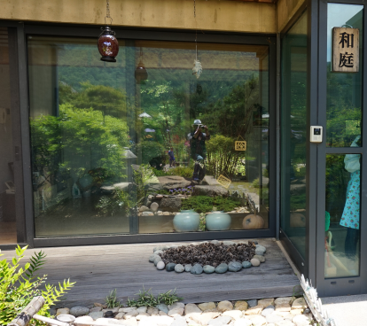
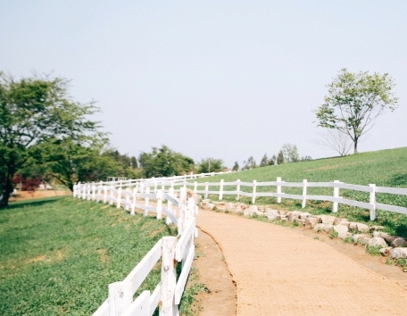
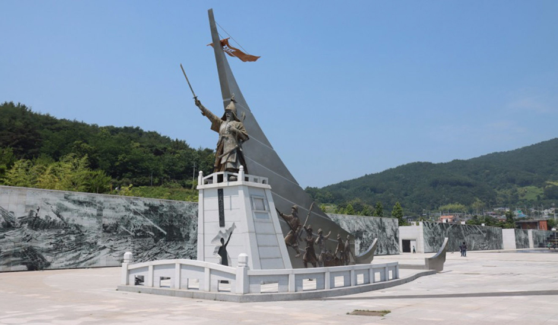
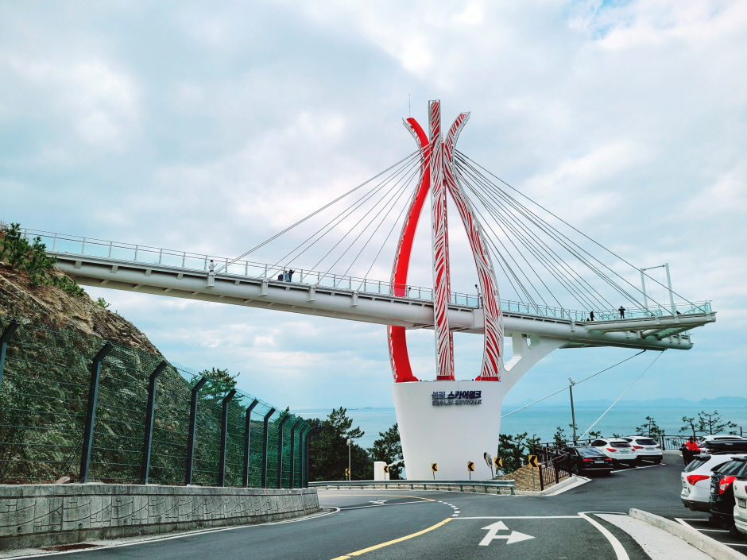
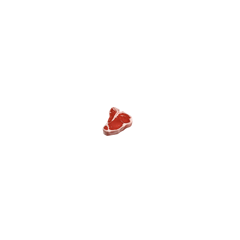

주요 관광지
-

원예예술촌
원예예술촌은 원예인들이 뜻을 같이하여 평생의 꿈으로 품어온 아름다운 정원과 예쁜 마을을 만들었다. 최신시설의 영상실, 공연장, 전시실, 체험실, 카페, 게스트 하우스로 잘 갖추어져 편의를 제공한다.
입장료 | 일반 6,000원 청소년/군인 3,000원 어린이 2,000원 -

남해 상상양떼목장 편백숲
상상양떼목장 편백숲은 피톤치드를 내뿜는 편백나무 등 각종 수목이 10만평 초지를 둘러싸고 있다. 또한 양 먹이를 주고 만져보고, 안아보고, 같이 사진도 찍을 수 있다.
입장료 | 성인 9,000원 소인 6,000원
-

이순신순국공원
역사공원이자 문화공원인 이순신순국공원은 남해군 관음포 일대에 관음포광장과 호국광장, 두 개 구역으로 조성되어 있다. 관음포 광장에는 관음포 대첩을 기념한 정지공원과 고려대장경 판각을 기념한 대장경공원이 있다. 또한 판옥선 공원, 거북선 공원, 학익진 공원 등 이순신 인물 체험공원이 있다. 호국광장에는 ‘순국의 벽’과 이순신 장군의 동상이 있다.
-

설리스카이워크
경남 남해군 미조면에 위치한 설리스카이워크는 원통형 구조로 360도 어디에서나 남해바다를 조망 할 수 있는 곳이다. 스릴넘치는 '스윙그네' 는 인도네시아 발리의 명물, ‘발리섬의 그네’를 모티브로 제작 했으며, 높이 38m의 스카이워크 끝 지점에서 스릴을 만끽 할 수 있다.
맛집 및 카페
-

소나무정
한식
주소 | 경남 남해군 남면 남면로 1530 -

램스하우스
양식(고기)
주소 | 경남 남해군 삼동면 동부대로 1078 1동 램스하우스 -

별아라카페
카페
주소 | 경남 남해군 서면 남서대로1517번길 28 별아라카페